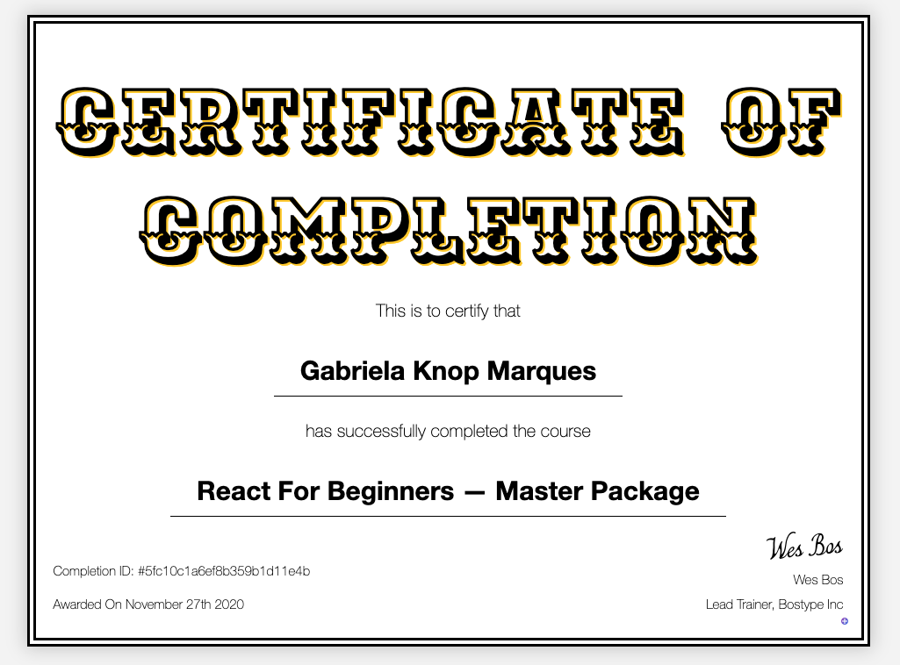
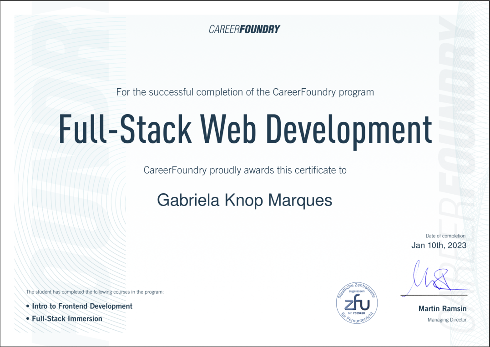
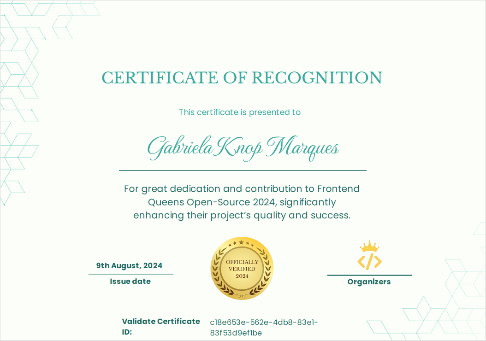
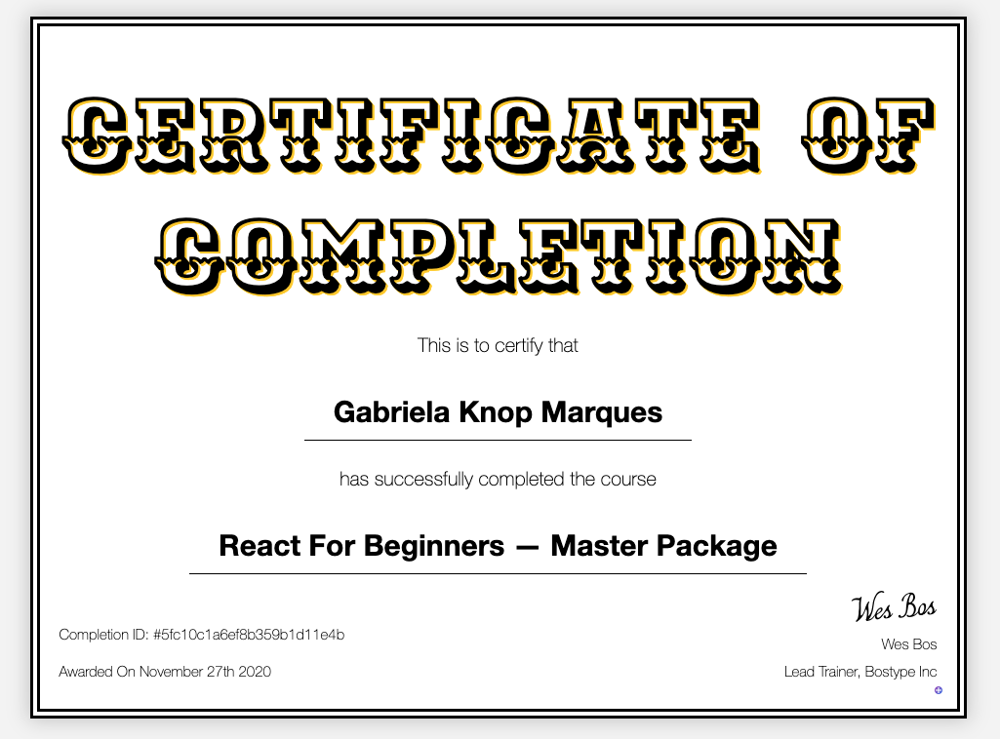
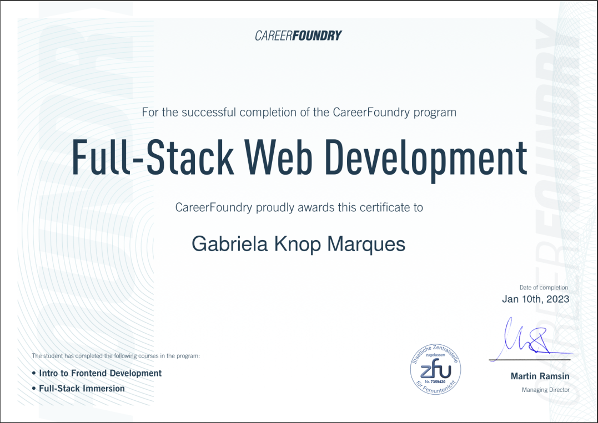
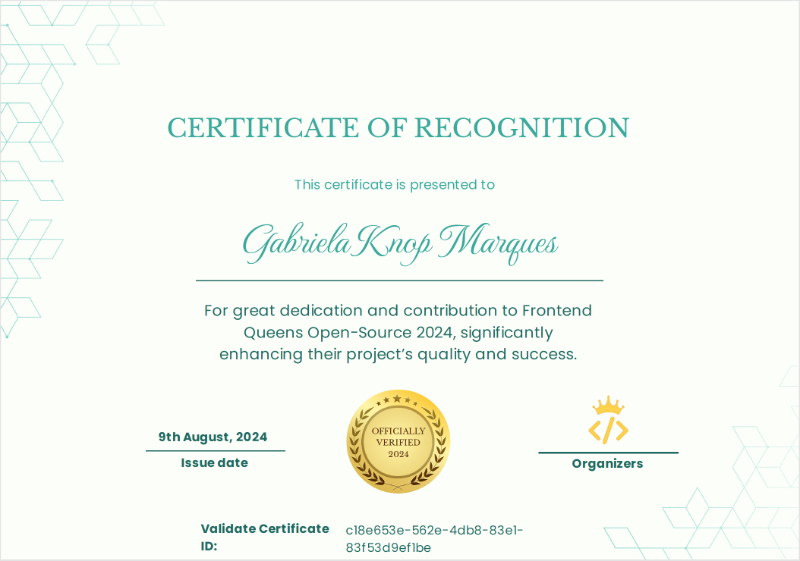

From Business Administration to Frontend Developer
A nostalgic way to honor my achievements
The long path: A college exam strain
First, it is important to mention that Florianópolis is a very touristic city with a great federal university where a lot of students would love to spend some years of their lives.
At that time, I had a dream to work at the Discovery Channel, so I was studying with the goal of entering one course: Biology. Unfortunately, for all nature lovers, the federal university offered only two relevant paths in the natural sciences: Medicine and Biology. This meant a huge number of people competing for a few spots in two courses where entrance exams are organized only once a year.
Flexibility & Persistence:
After losing two years of hard study without reaching a spot in my desired course, I started to reconsider what I could do to finally start a career.
With low motivation but conscious of my family's financial struggles, I began preparing for public career exams, a path often recommended for financial stability. Those who succeed in these exams can have a very stable job with a good income, which sounded appealing, but wasn’t motivating me enough.
Since learning new things is never a waste of time, I decided to give it a try. After a short period studying administrative and financial subjects, I was impressed by how useful the content was—things that were not being taught in middle schools. The subject gave me ideas and motivation to apply for a private university in a Business Administration course.
Strategic Move
To succeed in my plan to attend a private university, I researched ways to reduce my tuition and was happy to qualify for the governmental low-income aid under Article 170.
The course was designed for people who work during the day, so we had classes at night. I also took advantage of this schedule to start an internship as soon as the law allowed it.
After three semesters of payments and volunteer work (as part of my tuition grant), I was already preparing to request a university transfer from my private university to the governmental university offering the same course. This wasn’t just a strategic move due to financial struggles, but also because I knew that this course at this specific public university was considered one of the best in the country.
The transfer exam had only four descriptive questions, so it was considered tough. From my perspective, I was happy to study only topics related to business administration instead of all the subjects from fundamental and middle school (which were required to be accepted at the federal university).
Administration & Community Experience
As soon as I arrived at one of the most desired Business Administration courses in the country, I applied to the university’s Junior Consultancy Organization. This organization is composed entirely of students and is one of the most immersive experiences an administration student can have. It simulates real job roles, including hiring processes, finance, logistics, human resources, and more.
After succeeding in many steps of the recruitment process, I worked as a consultant with two dear colleagues— Cintia Brito and Gustavo Broilo —to provide a consultancy project for the university hospital's warehouse. We analyzed their inventory and resource management to find solutions for waste issues.
The solution presented was an educational program on storage best practices, combined with a dynamic Excel spreadsheet that, with macro functionalities, it was capable of connecting a tab where new product batches were registered with another tab to record outputs by unit (via number input fields).
Managing such a complex warehouse routine with a dinamic tool created by us made a deep impression on me. I was more fascinated by the technology we implemented—despite its limitations—than the theory or the experience we gained.
Tech World:
Were I found my bubble
Since Florianópolis is considered a technologic hub in my country, it was easy to decide what kind of companies I should focus my job applications on—and even easier to feel inspired by the creative, innovative culture that many of them fostered.
Working as administrative support for a fast-growing startup was tough, but it made me sure of the direction I wanted to pursue in my next opportunity.
After moving to Berlin and studying German for almost three years, I began preparing for a career transition into the tech field. I enrolled in a CareerFoundry bootcamp and participated in many personal projects, hackathons, and already completed two internships as a Junior Frontend Developer.
My next goal is to grow my backend development skills so I can contribute even more to project results and creative possibilities.
 




